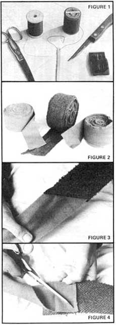
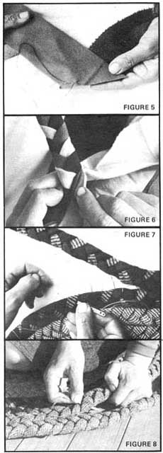
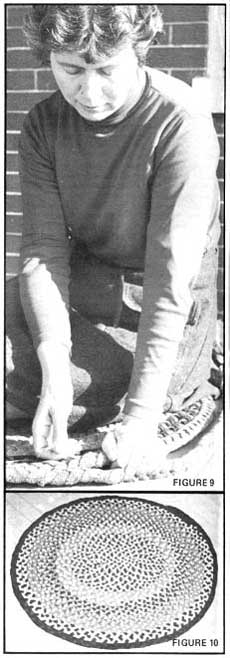

Braiding rugs is one of those near-ideal down-home crafts. Almost everyone already knows how to braid and the rest of the process is simple to learn. Nearly everyone, too, can use a rug and braided ones are reversible, satisfyingly one-of-a-kind and easily cleaned with a broom. The raw materials are abundantly available, hardly any tools are needed at all and rug braiding can be done anywhere . . . in a tent, on the porch, in front of the fire, in your camper, out in the meadow before the flies get bad, even by feel in the dark when the candles give out.
The most important ingredient of a braided rug-outside of your labor and love-is the recycled fabric from which it's made. You'll want wool that has good wear left in it, of course, or your finished product won't be worth your time and (if you sell it) the buyer's money. Synthetics are not springy and alive enough and cotton-while pretty-is stiff to work and won't hold up. Plenty of woolen garments are discarded for reasons that have nothing to do with the amount of mileage left in them, however, and the pickings are lush enough to allow you to be choosy. When gathering wool for my rugs, I avoid:
(1) Threadbare fabrics (if the elbows or knees are worn out of an otherwise good piece of clothing, cut the bad spots and use the rest).
(2) Very coarse, open weaves that are likely to ravel.
(3) Thready or flimsy weaves which are unlikely to wear well.
(4) Hard-finish fabric from men's suits. Although it can be used, it's very flat and doesn't combine well with higher napped wools. A rug made entirely of such material-usually always grey, brown, black or blue-would probably be pretty dull also.
The most unlikely clothes can be fair game for your braided rug "collection" . . . old bathrobes, out-of-style (is there really such a thing?) coats, rejected uniforms, torn slacks, moth-eaten blankets, a skirt that shrank or the prim wool dress that's become too tight. Round up these raw materials by putting the touch on friends and relatives who, likely as not, don't know what to do with them anyway. Visit rummage sales and load up with all the wool in sight (often available for little more than a song near closing time).
Before you cut up these clothes, though . . . try them on! How else do you think we got a tweed overcoat, pile-lined benchwarmer, wrap-around skirts and all the slacks I need for the year? (This is double recycling because, when the slacks have been overly pawed by our homestead goats, they'll enter their next existence as part of a rug). And check the pockets . . . we've found quarters in our time!
I don't hesitate to machine wash these rummage sale woolens before I begin to work with them, either. When they're going to be cut up for rugs, it doesn't matter if they shrink.
Although rummage sales now keep me well supplied with all the raw material I need, I have bought rug braiding wool from mill end stores and factory outlets in the past. If there's one of these outlets near you, you may find it a good source of the interesting colors you need to spark up your rugs . . . especially if it offers "seconds" by the pound.
All you'll need in the way of tools and paraphernalia are scissors, thread, needles, bodkin (a heavy, blunt needle) and knife or seam ripper (Figure 1). An ordinary needle and thread are used for sewing strips of cloth together and a bodkin and strong thread for lacing the braids. I use Aunt Lydia's brand for the latter but larger, cheaper spools of very strong cotton thread can often be bought at mills. I wouldn't recommend nylon, though, since it will cut through the wool as the rug is used.
When you braid a rug, it's all there in your hands. The difference between a pleasing finished product and a shoddy one lies in craftsmanship . . . in that attention to detail and that oneness with the materials that produces the proper yank on the thread and the controlled pull on the braid. You'll get the feel of this as you proceed, so make your first rug a small one . . . you can always enlarge it later.
Start your rug by cutting up the clothes you've gathered. You'll salvage the most wool if you rip the seams open (save any pile coat linings for other things) and-if you have the patience to do the necessary extra piecing-you can even use the collars and other short sections. Recycle the scraps that are too small for anything else by burying them in the garden or compost pile.
Next, cut or tear the wool into strips. You'll have to cut the very heavy fabrics but you can turn the slightly dusty-linty job of tearing the rest over to the children . . . who'll do it with great gusto!
Cut the heavy woolens into strips two inches wide. This allows just enough leeway to turn the raw edges in. Use a three inch width for lighter weight fabrics that require more self-padding as they're folded together. There's nothing absolute about any of this, as you can see.
Now sooner or later these strips have got to be sewn together. If you do it all at once, though, you'll have such long ribbons to work with that you'll find your braiding turns into a fancy exercise in untangling. Sewing together only a few pieces at a time and rolling these shorter strips into "spools" (Figure 2) makes braiding much easier and is the method I recommend.
Strips are always sewn together on the bias . . . that is, at an angle. If you were to sew them straight. across the ends, you'd have a bulky, hard-to-manage lump whereas a diagonal seam distributes the bulk and keeps the braid pliable (Figure 3).
To make a true bias, overlap two strips-right sides up-for as many inches as they are wide and cut diagonally across the lap (Figure 4). Then, with "right" sides facing, line up the newly-cut edges at right angles and sew them firmly together (Figure 5). Matching thread is a nice extra touch but isn't at all imperative.
We use colors as they come for our actual braiding and I've never yet specially dyed strips for a rug. That's my idea of too much work (no offense, though, to those who'd like to . . . let us know how it turns out). Faded coats and such are usually good as new on the underside so that's the side we turn out.
I do keep spools grouped in boxes of blues, reds, oranges, brown-green-tans and-in the largest carton of all-grey. (There are more grey clothes around than anything. . . makes you think.) One special carton hoards a small collection of wool strips with extra POW! . . . rich burgundy, bittersweet orange, old gold, fern green. I often begin a rug with these special shades since I can generally get the most impact with the least wool in the starting braid where less is needed to go around. Otherwise, I dole out the hoard very sparingly.
If I have only a little gold, for instance, and want its mellowness in a brown, earth-tones rug . . . I start with the gold (braided with two contrasting colors), continue with browns and use the gold again in a single band toward the outside edge of the piece.
In other words, it's a good idea to plan the colors of a rug before you begin. Even a hit-or-miss pattern needs enough colors to give it an "everything" look. Of course, if you happen to get stuck with a lot of something like purple, you'll just have to make an outrageously PURPLE rug . . . and chances are someone will like it!
When I began my first rug, I dutifully used three of those clanking metal tube-form braiding aids . . . but they jangled around and got into their own kinds of trouble. Besides, they made the process less immediate, less hand-controlled, less satisfying. For me at least, braiding goes much better with my fingers smoothing and folding the strips as I proceed.
Start the braid by folding each of three strips-good side out-in fourths. To do this, fold each side to the center and then put the sides together by creasing the strip along its imaginary center line.
Now sew the three strips-each folded into four layerstogether across one raw end. With the three strips joined, start braiding just as you would braid hair or yarn . . . except that you must take extra care to fold the strips around to make flat-rather than twisted-edges (Figure 6).
For the first few feet, the braid will seem to be everywhere and nowhere . . . you need to put some tension on it. Pin, tie or clamp-even close the window on or get a friend to hold-the very end of the braid so you can pull gently on it as you go. That'll help you keep it straight.
When the braid is a reasonable length, you can start lacing it together into an oval, rectangular, round or square rug. Since, like the egg, an oval is endlessly fascinating and pleasing, you'll probably want to use that shape for your first project.
The length of the starting braid will determine the finished size of the floor covering. Very simply, the projected length of the rug minus its projected width equals the length of the starting braid. For a 4' X 6' rug (6-4), then, you would theoretically begin with a starting braid two feet long. BUT, I always allow a few extra inches to make up for the slight shrinking effect that I get when I lace the braids together. Thus, for a 4' X 6' rug, I make a starting braid about two feet, three inches long.
Lay the braid on a flat, hard surface (such as the floor), mark the end of the starting length with a big safety pin and double the braid back on itself at this point. Force both sections of the braid to lie flat as you form this rounded corner.
Thread your bodkin with a double strand of heavy thread about a yard long. Much longer than that will tangle . . . I know because I've tried to save time that way, too! Knot the end of the thread and, starting at the pin-marked corner, poke the bodkin in between the braid folds. Take several stitches to secure the thread and then begin to lace by inserting the bodkin through every other braid fold, alternating from left to right (Figure 7). Pull firmly with your right hand as you hold the braids flat with your left (Figure 8).
At no point does the bodkin puncture the fabric. It always leads the thread between the loops of the braids. This is what makes the rug reversible.
Unless you're making a long, rectangular runner, cornering is the moment of truth when you realize that rug braiding involves some craftsmanship. If you sew too tightly around the corners, your rug will "bathtub" and be fit only for use as a doormat at the chicken house . . . if that. You must learn a slightly more sophisticated stitch for the corners.
For the first six to ten rounds- at the corners only -the stitches on the body of the rug must be closer together than those on the braid you're attaching. That is, lace through a loop on the outer braid and through the next loop on the rug body . . . then skip a loop on the outer braid and lace the following one to the very next loop on the body of the rug.
In this way, you "hold back" the attaching braid so that it stays flat and doesn't bunch up the rug. Later, as the project gets bigger and the turns less sharp, you won't need to hold back the outside braid as frequently as during the first few rounds. The process quickly becomes second nature.
A round rug, of course, is all corners so there's no need to compute the length of a starting braid. Just snail the braid around and around as you hold it flat and continually correct for the increasing diameter by making the "skip" stitches every few inches in the beginning, and only each foot or so as the rug grows.
If it ever appears that your round or oval rug won't lie flat, you lose nothing but time by unlacing the piece and starting again from shortly in front of the point where it begins to buckle. Even the thread can be used again. I've had to rip out my work several times and, while it's painful, the results are worth it.
There's probably no way to end an oval or round rug invisibly, but that doesn't really matter. After all, they are handmade things, with all the sturdy imperfections that that implies. A braided rug is genuine, never pretending to be what it's not.
Some braiders taper the three strips to be as narrow as possible at the end so the braid's butt will lie more smoothly against the edge of the rug. Whether or not you do this, sew the raw edges of the braid with over-and-under stitches and then sew the braid to as much of a point as possible and stitch it firmly to the body of the rug.
Square rugs are interesting and, to get the shape, just square off the corners when you start lacing the rug together.
Runners are another possibility and a long one makes a very nice stair carpeting. Just be sure to measure carefully before you cut each braid . . . and then add a yard of leeway. And don't forget to allow for the fitting of the rug around the lip of each stair tread (bitter experience speaking here).
You'll have none of those easing-around-the-corners problems when you lace a runner together from several long, straight braids. If the braids' vary in thickness, though, the finished piece may have an odd and not altogether functional curve to it. We've found that beginning with the center braid and lacing additional ones alternately to each side (rather than working from one edge to the other) helps to eliminate this tendency.
Finish a runner on both ends with a piece of heavy fabric 8 or 10 inches wide and an inch or so longer than the width of the rug. Turn the ends of the fabric under, fold it in its center, wrap it around the end of the runner and sew it front and back to form a binding.
We won't fool each other by pretending that braided rugs can be made quickly. They can't. But nothing in the procedure requires your total concentration, either. You can open seams and rip strips while soaking up the sun, catching the breeze or sitting in front of a winter fire. Sewing, braiding and lacing can all be done leisurely as you talk to friends, listen to music or-from the corner of your eye-watch the chickens foraging in the yard.
Because a rug in progress can be left right on the floor where it's easy to work on in spare minutes, it'll grow surprisingly fast . . . and family and friends can add their bit. Outof-pocket investment (mostly you're investing time and imagination) for such a useful product is small, too. For all these reasons, rug braiding is a near perfect cottage industry.
Selling braided rugs won't pull in your whole keep, of course, but it's an easy homestead way to make a little bread and yogurt money while keeping the sheep's coat going round once more. And for us, at least, it allows so much quantity buying at rummage sales that many of our clothes cost only pennies.
We sell our rugs through the Chestnut Hill Community Center in Philadelphia for $2.00 a square foot (thus, an 8' X 10' rug carries a tag of $160) and the Center retains a 25% commission. The price is fairly low but it's more important to us to have something interesting and productive to do in odd moments than it is to sell rugs at the highest possible price.
The Center turns our work over steadily all year long and we sell other rugs at auctions and through ads in the paper. We've even gotten several special orders now and we have fun coming up with color combinations that suit a certain customer's mood or room.
Our braided rug work and marketing may not be the most lucrative operation in the world . . . but it's personal . . . can't be hurried . . . and we're happy doing it our way.
|
 |
 |
 |